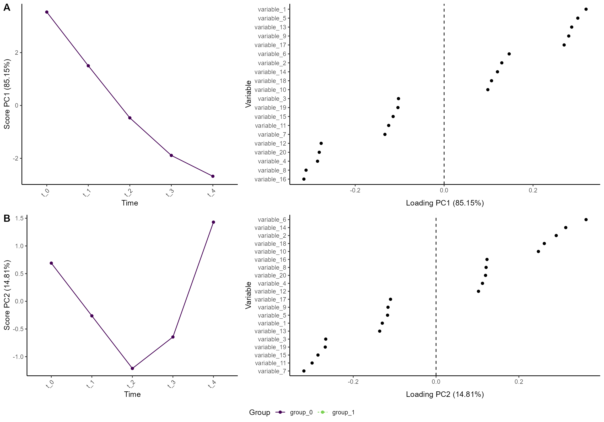
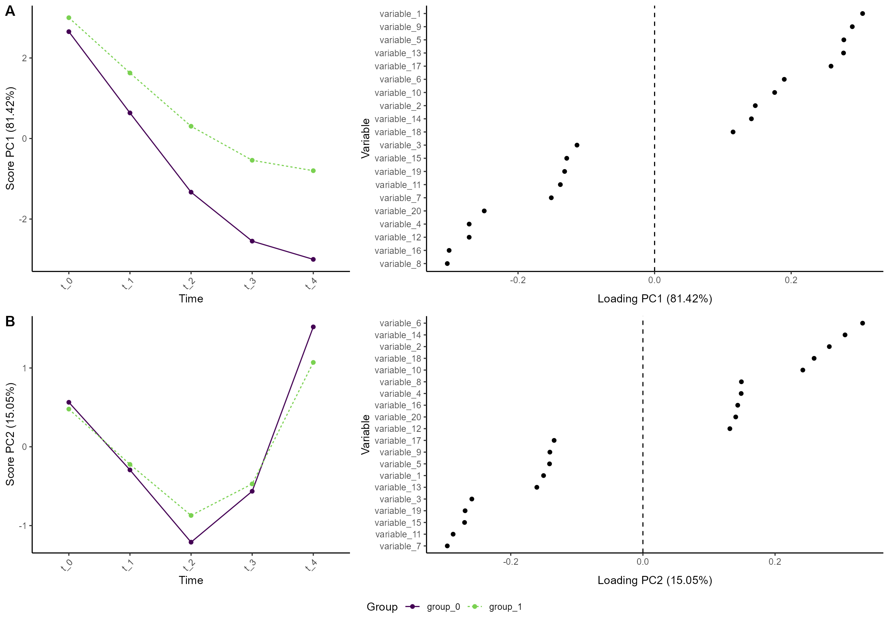
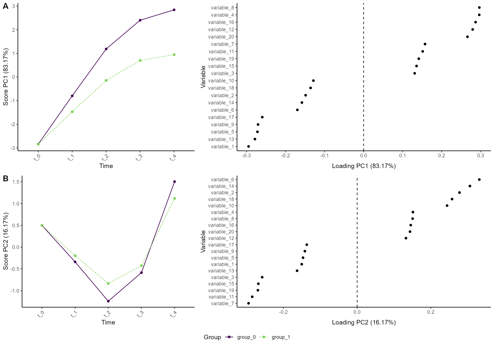
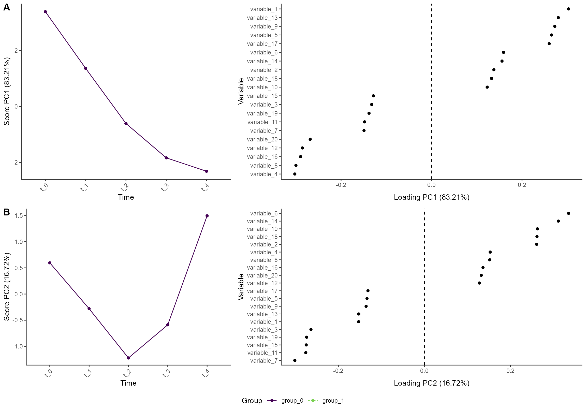
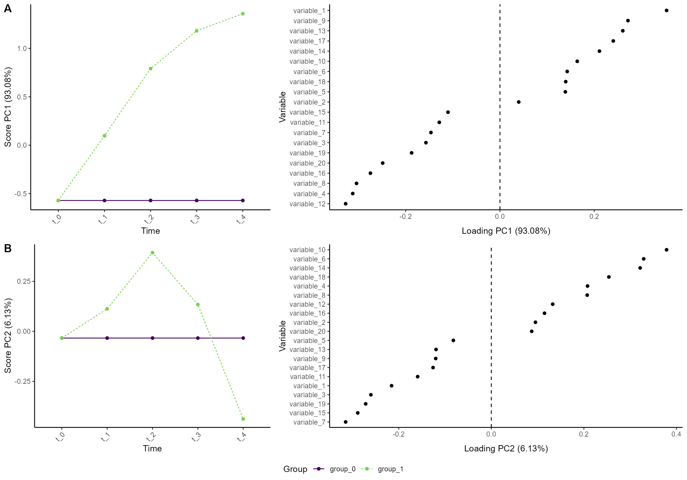

Introduction to ALASCA
The ALASCA package is described in the paper ALASCA: An R package for longitudinal and cross-sectional analysis of multivariate data by ASCA-based methods.. The paper contains several examples of how the package can be used.
Installation
if (!requireNamespace("devtools", quietly = TRUE))
install.packages("devtools")
devtools:install_github(“andjar/ALASCA”, ref = “main”)Citation
If you have utilized the ALASCA package, please consider citing:
Jarmund AH, Madssen TS and Giskeødegård GF (2022) ALASCA: An R package for longitudinal and cross-sectional analysis of multivariate data by ASCA-based methods. Front. Mol. Biosci. 9:962431. doi: 10.3389/fmolb.2022.962431
@ARTICLE{10.3389/fmolb.2022.962431,
AUTHOR={Jarmund, Anders Hagen and Madssen, Torfinn Støve and Giskeødegård, Guro F.},
TITLE={ALASCA: An R package for longitudinal and cross-sectional analysis of multivariate data by ASCA-based methods},
JOURNAL={Frontiers in Molecular Biosciences},
VOLUME={9},
YEAR={2022},
URL={https://www.frontiersin.org/articles/10.3389/fmolb.2022.962431},
DOI={10.3389/fmolb.2022.962431},
ISSN={2296-889X}
}Creating an ASCA model
Generating a data set
We will start by creating an artificial data set with 100 participants, 5 time points, 2 groups, and 20 variables. The variables follow four patterns
- Linear increase
- Linear decrease
- A v-shape
- An inverted v-shape
The two groups have similar baseline, but one of the groups have a larger change in the values.
n_time <- 5
n_id <- 100
n_variable <- 20
df <- rbindlist(lapply(seq(1,n_id), function(i_id) {
rbindlist(lapply(seq(1,n_variable), function(i_variable) {
r_intercept <- rnorm(1, sd = 5)
i_group <- i_id %% 2
if (i_group == 1) {
beta <- 2 + rnorm(1)
} else {
beta <- 3 + rnorm(1)
}
temp_data <- data.table(
id = paste0("id_", i_id),
group = paste0("group_", i_group),
time = seq(1, n_time) - 1,
variable = paste0("variable_", i_variable)
)
if ((i_variable %% 4) == 0) {
temp_data[, value := r_intercept + beta * time]
} else if ((i_variable %% 4) == 1) {
temp_data[, value := r_intercept - beta * time]
} else if ((i_variable %% 4) == 2) {
temp_data[, value := r_intercept - beta*n_time/2 + beta * abs(time - n_time/2)]
} else {
temp_data[, value := r_intercept + beta*n_time/2 - beta * abs(time - n_time/2)]
}
temp_data[, value := value + rnorm(n_time)]
temp_data[, value := value * i_variable/2]
temp_data
}))
}))Overall (ignoring the random effects), the four patterns look like this:
ggplot(df[variable %in% c("variable_1", "variable_2", "variable_3", "variable_4"),],
aes(time, value, color = group)) +
geom_smooth() +
facet_wrap(~variable, scales = "free_y")
#> `geom_smooth()` using method = 'loess' and formula 'y ~ x'
Initialize the ALASCA model
We want time to be a categorical variable:
df[, time := paste0("t_", time)]The effect of time
res_1 <- ALASCA(
df,
value ~ time + (1|id)
)
#> INFO [2022-11-10 23:21:17] Initializing ALASCA (v1.0.5, 2022-08-16)
#> WARN [2022-11-10 23:21:17] Guessing effects: `time`
#> INFO [2022-11-10 23:21:17] Will use linear mixed models!
#> INFO [2022-11-10 23:21:17] Will use Rfast!
#> WARN [2022-11-10 23:21:17] The `group` column is used for stratification
#> WARN [2022-11-10 23:21:17] Converting `character` columns to factors
#> INFO [2022-11-10 23:21:17] Scaling data with sdall ...
#> INFO [2022-11-10 23:21:17] Calculating LMM coefficients
#> INFO [2022-11-10 23:21:18] ==== ALASCA has finished ====
#> INFO [2022-11-10 23:21:18] To visualize the model, try `plot(<object>, effect = 1, component = 1, type = 'effect')`
plot(res_1, comp = c(1,2))
#> INFO [2022-11-10 23:21:18] Effect plot. Selected effect (nr 1): `time`. Component: 1 and 2.
#> WARN [2022-11-10 23:21:18] Showing 20 of 20 variables. Adjust the number with `n_limit`
#> WARN [2022-11-10 23:21:18] Showing 20 of 20 variables. Adjust the number with `n_limit`
The effect of group and time
res_2 <- ALASCA(
df,
value ~ time*group + (1|id)
)
#> INFO [2022-11-10 23:21:20] Initializing ALASCA (v1.0.5, 2022-08-16)
#> WARN [2022-11-10 23:21:20] Guessing effects: `time+time:group+group`
#> INFO [2022-11-10 23:21:20] Will use linear mixed models!
#> INFO [2022-11-10 23:21:20] Will use Rfast!
#> WARN [2022-11-10 23:21:20] The `group` column is used for stratification
#> WARN [2022-11-10 23:21:20] Converting `character` columns to factors
#> INFO [2022-11-10 23:21:20] Scaling data with sdall ...
#> INFO [2022-11-10 23:21:20] Calculating LMM coefficients
#> INFO [2022-11-10 23:21:20] ==== ALASCA has finished ====
#> INFO [2022-11-10 23:21:20] To visualize the model, try `plot(<object>, effect = 1, component = 1, type = 'effect')`
plot(res_2, comp = c(1,2))
#> INFO [2022-11-10 23:21:20] Effect plot. Selected effect (nr 1): `time+time:group+group`. Component: 1 and 2.
#> WARN [2022-11-10 23:21:20] Showing 20 of 20 variables. Adjust the number with `n_limit`
#> WARN [2022-11-10 23:21:20] Showing 20 of 20 variables. Adjust the number with `n_limit`
As a randomized trial
res_3 <- ALASCA(
df,
value ~ time + time:group + (1|id),
equal_baseline = TRUE
)
#> INFO [2022-11-10 23:21:22] Initializing ALASCA (v1.0.5, 2022-08-16)
#> WARN [2022-11-10 23:21:22] Guessing effects: `time+time:group`
#> INFO [2022-11-10 23:21:22] Will use linear mixed models!
#> INFO [2022-11-10 23:21:22] Will use Rfast!
#> WARN [2022-11-10 23:21:22] The `group` column is used for stratification
#> WARN [2022-11-10 23:21:22] Converting `character` columns to factors
#> INFO [2022-11-10 23:21:22] Scaling data with sdall ...
#> INFO [2022-11-10 23:21:22] Calculating LMM coefficients
#> INFO [2022-11-10 23:21:22] ==== ALASCA has finished ====
#> INFO [2022-11-10 23:21:22] To visualize the model, try `plot(<object>, effect = 1, component = 1, type = 'effect')`
plot(res_3, comp = c(1,2))
#> INFO [2022-11-10 23:21:22] Effect plot. Selected effect (nr 1): `time+time:group`. Component: 1 and 2.
#> WARN [2022-11-10 23:21:22] Showing 20 of 20 variables. Adjust the number with `n_limit`
#> WARN [2022-11-10 23:21:23] Showing 20 of 20 variables. Adjust the number with `n_limit`
Why is equal_baseline = TRUE necessary? Well, it is due
to how the regression equations are made by r. Just look at these two
model matrices:
res_4 <- ALASCA(
df,
value ~ time + time:group + (1|id),
equal_baseline = FALSE
)
#> INFO [2022-11-10 23:21:24] Initializing ALASCA (v1.0.5, 2022-08-16)
#> WARN [2022-11-10 23:21:24] Guessing effects: `time+time:group`
#> INFO [2022-11-10 23:21:24] Will use linear mixed models!
#> INFO [2022-11-10 23:21:24] Will use Rfast!
#> WARN [2022-11-10 23:21:24] The `group` column is used for stratification
#> WARN [2022-11-10 23:21:24] Converting `character` columns to factors
#> INFO [2022-11-10 23:21:24] Scaling data with sdall ...
#> INFO [2022-11-10 23:21:24] Calculating LMM coefficients
#> INFO [2022-11-10 23:21:24] ==== ALASCA has finished ====
#> INFO [2022-11-10 23:21:24] To visualize the model, try `plot(<object>, effect = 1, component = 1, type = 'effect')`
res_3$effect_list$model_matrix[[1]][1:3, ]
#> timet_1 timet_2 timet_3 timet_4 timet_1:groupgroup_1 timet_2:groupgroup_1
#> 1 0 0 0 0 0 0
#> 2 1 0 0 0 1 0
#> 3 0 1 0 0 0 1
#> timet_3:groupgroup_1 timet_4:groupgroup_1
#> 1 0 0
#> 2 0 0
#> 3 0 0
res_4$effect_list$model_matrix[[1]][1:3, ]
#> timet_1 timet_2 timet_3 timet_4 timet_0:groupgroup_1 timet_1:groupgroup_1
#> 1 0 0 0 0 1 0
#> 2 1 0 0 0 0 1
#> 3 0 1 0 0 0 0
#> timet_2:groupgroup_1 timet_3:groupgroup_1 timet_4:groupgroup_1
#> 1 0 0 0
#> 2 0 0 0
#> 3 1 0 0You can see that without equal_baseline = TRUE, there is
an extra interaction term at baseline:
timet_0:groupgroup_1
As a randomized trial with separate effects
res_5 <- ALASCA(
df,
value ~ time + time:group + (1|id),
separate_effects = TRUE,
equal_baseline = TRUE
)
#> INFO [2022-11-10 23:21:25] Initializing ALASCA (v1.0.5, 2022-08-16)
#> WARN [2022-11-10 23:21:25] Guessing effects: `time` and `time:group`
#> INFO [2022-11-10 23:21:25] Will use linear mixed models!
#> INFO [2022-11-10 23:21:25] Will use Rfast!
#> WARN [2022-11-10 23:21:25] The `group` column is used for stratification
#> WARN [2022-11-10 23:21:25] Converting `character` columns to factors
#> INFO [2022-11-10 23:21:25] Scaling data with sdall ...
#> INFO [2022-11-10 23:21:25] Calculating LMM coefficients
#> INFO [2022-11-10 23:21:25] ==== ALASCA has finished ====
#> INFO [2022-11-10 23:21:25] To visualize the model, try `plot(<object>, effect = 1, component = 1, type = 'effect')`
plot(res_5, comp = c(1,2), effect = 1)
#> INFO [2022-11-10 23:21:25] Effect plot. Selected effect (nr 1): `time`. Component: 1 and 2.
#> WARN [2022-11-10 23:21:25] Showing 20 of 20 variables. Adjust the number with `n_limit`
#> WARN [2022-11-10 23:21:25] Showing 20 of 20 variables. Adjust the number with `n_limit`
plot(res_5, comp = c(1,2), effect = 2)
#> INFO [2022-11-10 23:21:26] Effect plot. Selected effect (nr 2): `time:group`. Component: 1 and 2.
#> WARN [2022-11-10 23:21:26] Showing 20 of 20 variables. Adjust the number with `n_limit`
#> WARN [2022-11-10 23:21:27] Showing 20 of 20 variables. Adjust the number with `n_limit`